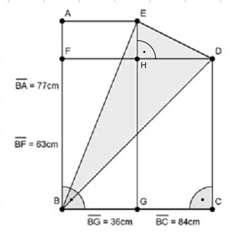

Pythagoras Aufgabe 82 Berechnen Sie den Umfang U des farbigen Dreiecks in cm.  Satz von Pythagoras im Dreieck BCD: BD² = CD² + BC² BD² = 63² cm² + 84² cm² = 11 025 cm² |√ BD = 105 cm Satz von Pythagoras im Dreieck HDE: ED² = HE² + HD² HE = BA – BF = 77 cm – 63 cm = 14 cm HD = BC – BG = 84 cm – 36 cm = 48 cm ED² = 14² cm² + 48² cm² = 2 500 cm² |√ ED = 50 cm Satz von Pythagoras im Dreieck BEA: BE² = AE² + AB² BE² = 36² cm² + 77² cm² = 7 225 cm² |√ BE = 85 cm U = 105 cm + 50 cm + 85 cm = 240 cm